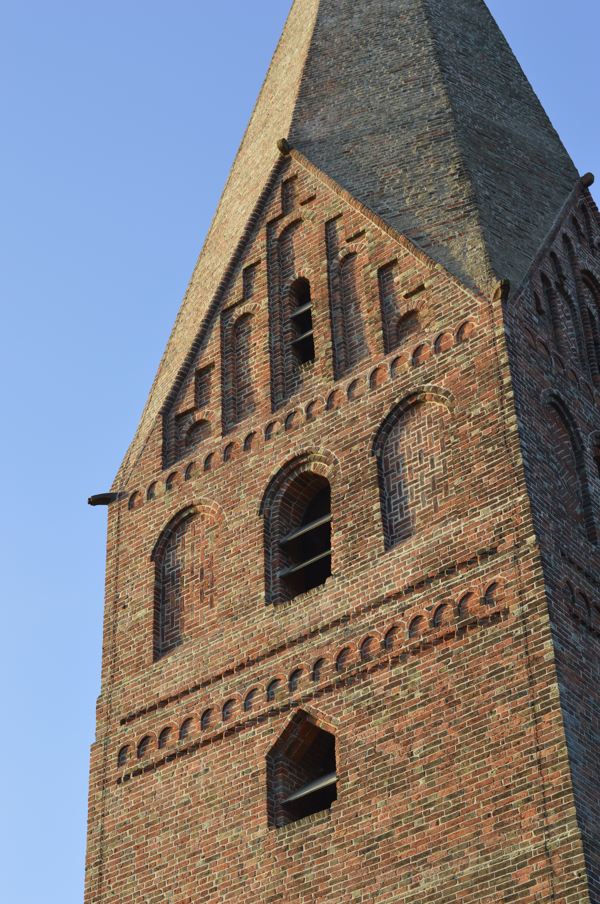
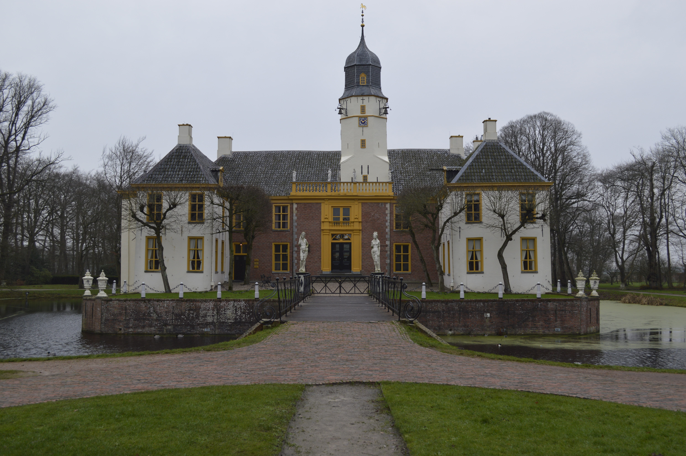

Boerderijmuseum Duurswold Slochteren
Meer informatie over boerderijmuseum Duurswold in Slochteren vind u op http://www.duurswold.nl/
Meer informatie over boerderijmuseum Duurswold in Slochteren vind u op http://www.duurswold.nl/
Meer informatie over de “De Ruiten”, “De Grootse Polder” of de “Fraeylemamolen” vind u op http://www.slochtermolenstichting.nl/
Meer informatie over de hervormde kerk in Schildwolde vind u op http://nl.wikipedia.org/wiki/Kerk_van_Schildwolde
Meer informatie over de Duivenslag vind u op http://nl.wikipedia.org/wiki/Duivenslag
Meer informatie over Groningen vind u op http://toerisme.groningen.nl/
Meer informatie over het Schildmeer te Schildwolde vind u op http://nl.wikipedia.org/wiki/Schildmeer
Meer informatie over het natuurgebied ’t Roegwold vind u op http://www.provinciegroningen.nl/actueel/nieuws/nieuwsbericht/_nieuws/toon/Item/natuurgebied-midden-groningen-gaat-t-roegwold-heten/

Meer informatie over de Juffertoren van Schildwolde vind u op http://nl.wikipedia.org/wiki/Juffertoren

Meer informatie over landgoed Fraeylemaborg te Slochteren vind u op http://www.fraeylemaborg.nl/